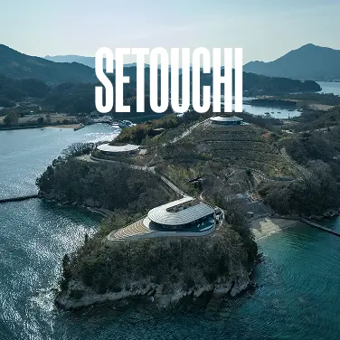
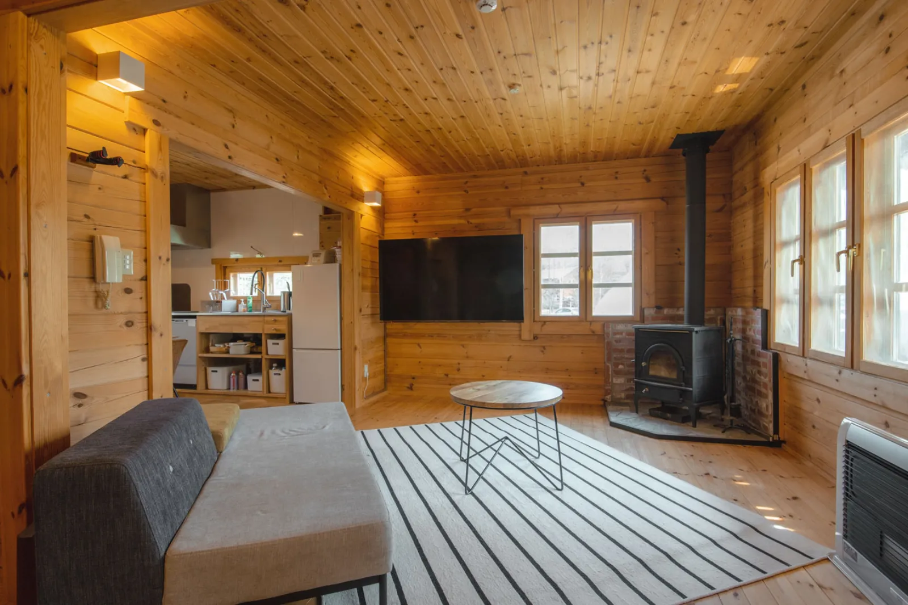
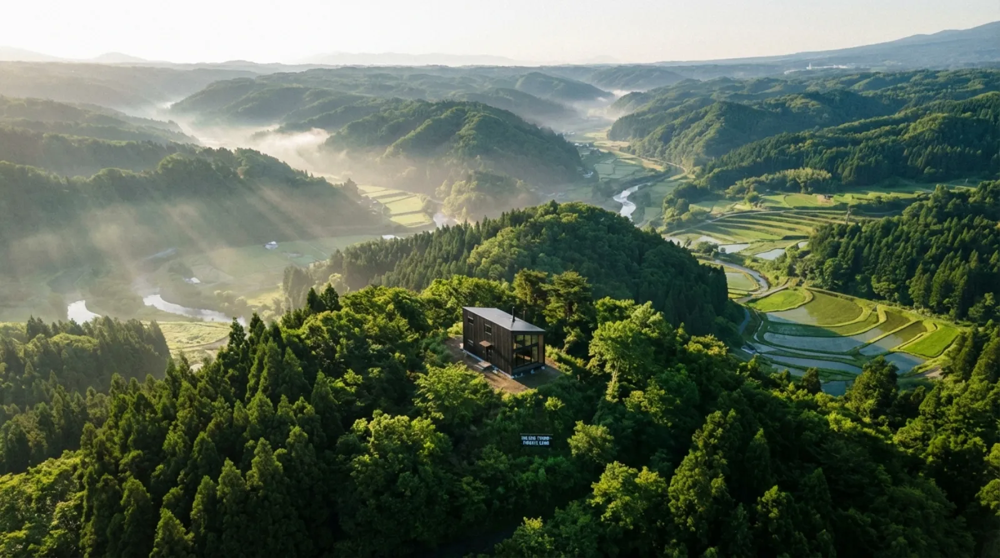

直島。豊島。世界最高峰の建築家たちが作品を残した、人口わずかな島。瀬戸内国際芸術祭には3年に一度100万人以上が訪れるが、高級滞在施設は圧倒的に不足している。このアートの海に、帰れる場所を持つ。
島には、すでにアートがある。
足りないのは、帰れる場所だ。
瀬戸内国際芸術祭は3年に一度、島を人で満たす。でも
本当に息ができる場所、本当に帰れる場所は、まだここにない。
Location · 場所
直島アート島、豊島美術館、犬島。安藤忠雄が痕跡を残した島々。高級滞在施設が不足する瀬戸内に、SOLUNAがヴィラ拠点を建てる。
Why Kagawa · なぜ香川か
直島は世界的に知られている。しかし多くの人にとってまだ「一度行く場所」だ。SOLUNAで、「何度でも帰る場所」に変える。
12の島を舞台に3年ごとに100万人超が訪れる。世界的アーティストの現代美術インスタレーションが島の景観に溶け込む。4月から11月、島は変貌する。
地中美術館、ベネッセハウス、李禹煥美術館。プリツカー賞建築家の傑作が島そのものに組み込まれている。ここに滞在することが、建築との直接的な身体的な対話になる。
世界的な知名度に対して、直島の高級宿泊施設は極端に少ない。ベネッセハウスの65室は常に満室。この希少性こそ、SOLUNAが解決する問題だ。
瀬戸内海エリアは日本一降水量が少なく、最も安定した気候に恵まれている。穏やかな海と柔らかな陽光。北海道の冬と違い、年中快適に滞在できる稀な立地だ。
Who Returns Here · ここに帰る人たち
アートを愛する人へ。建築を愛する人へ。瀬戸内の海に出会ったすべての人へ。
地中美術館、豊島美術館、ベネッセハウス。訪ねる側から、帰れる側へ。一度きりでなく、深くアートと向き合える。
安藤忠雄、SANAA、妹島和世。島全体が野外建築美術館だ。毎年ここに帰れることは、季節と天候で変わる同じ空間を体験し続けること。
東京で働き、都市に住む。瀬戸内に島の拠点を持つと、思考のスピードが変わる。ネットワークから切れた状態でしかできないクリエイティブな仕事がある。
東京・京都以外の日本を体験したい海外在住者へ。直島はすでに世界的に著名だ。毎回の来日で確実に滞在できる島の拠点を持つことは、現代の日本旅行の理想形だ。
Development Plan · 開発計画
現在計画策定中のため、詳細は変更になる可能性があります。先行登録者には最新情報を優先的にお届けします。
瀬戸内海を一望するヴィラ。各棟にオープンデッキ・露天風呂・建築家設計インテリアを備える。アートと建築が共存する空間。
地中美術館・ベネッセハウス・豊島美術館などへのSOLUNAメンバー専用プライベートツアー。一般の来島者では得られない深度の出会い。
瀬戸内の島々をシーカヤックで巡る。水上から島の景観を体験する。観光ルートにない、SOLUNAメンバーだけの体験。
ヴィラ内のクリエイティブスタジオ。陶芸・絵画・写真暗室。アートに囲まれた島で、自分の作品を制作する。
地元漁港直送の新鮮な魚介。地酒と瀬戸内食材のペアリングプライベートダイニング。島でしか体験できないヴィラ料理。
瀬戸内国際芸術祭期間中の快適な拠点。観光客が宿泊先を奪い合う中、SOLUNAメンバーは確実に滞在できる。宿の心配なく、アート鑑賞に集中できる。
Timeline · スケジュール
開発計画の策定中。先行登録を受け付け、コミュニティを形成。直島・豊島エリアの候補地調査・選定。
土地取得。建築家との協議開始。先行登録者へのプレビューイベント開催。詳細設計の確定。
建設工事開始。CABIN CLUBの正式募集開始。北海道TAPKOPと美留和ビレッジの開発経験を活かした瀬戸内拠点。
CABIN CLUBとして運用開始。先行登録者から優先利用権付与。次回瀬戸内国際芸術祭の開催に合わせた運用開始を目指す。
Real Listings · 実際の市場物件
SOLUNAが注目しているエリアで現在売りに出ている実際の物件。市場の価格帯・相場感の参考として。
（情報は2026年4月時点。成約済みの場合があります。購入には現地確認・法的審査が必要です）
物件情報は各掲載サイトに帰属します。成約・価格変更の可能性があります。購入には宅建業者を介した正式契約が必要です。
Pre-Registration · 先に島の拠点を確保する
価格は未定です。先行登録者には最優先の土地選択権と最安値でご案内します。目標開業2030年。でも島の拠点は今日から確保できる。
登録・相談は完全無料。いつでもキャンセル可能。
返信は通常3営業日以内。
Other Properties · 他の物件
北海道から瀬戸内まで、日本の最良の土地でキャビンを建てていく。

摩周湖・屈斜路湖。EPSドーム × Tesla V2H。1口¥530万〜、年30泊の権利。

熊野古道の霊気と海の光。神域リトリート。2028年着工予定。
瀬戸内のアート島。瀬戸内国際芸術祭の拠点。2030年開業目標。
FAQ